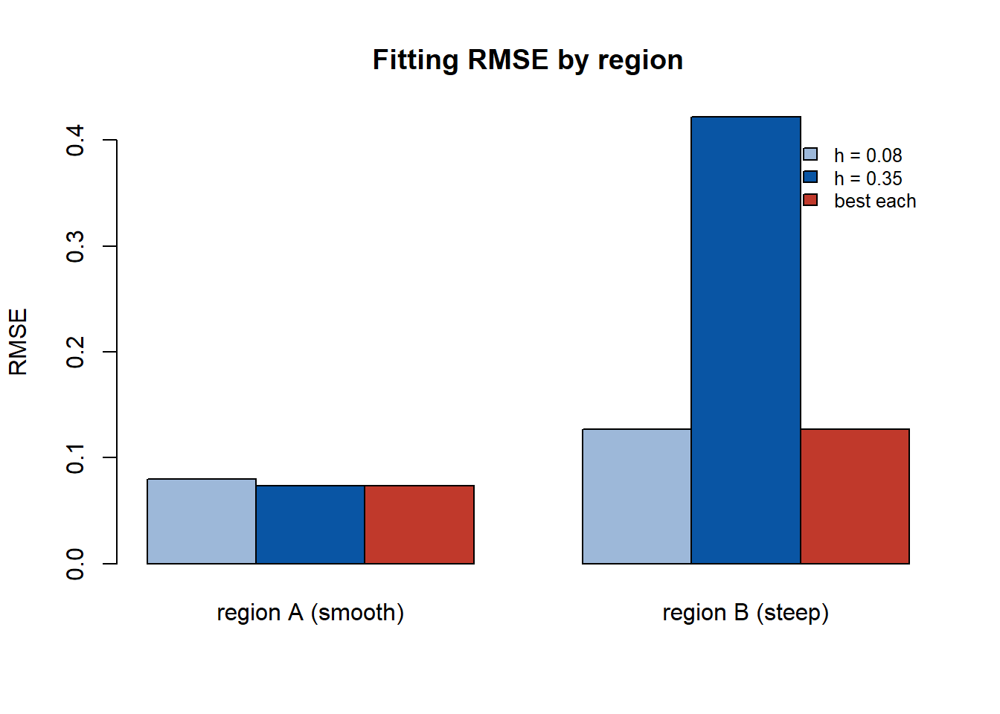

第 7 局部回归的窗宽设定：从同窗宽到异窗宽
对应论文：侯健, 王芝皓, 田茂再, 窦燕. 基于异窗宽 GTWR 模型的商品 住宅价格影响因素研究. 数理统计与管理, 2022, 41(06): 1003-1014 (侯健 et al. 2022)。本章是论文的补充材料：补齐窗宽问题的偏差-方差 分析、标准差椭圆这一空间统计工具的完整计算，以及区域划分的 算法细节。
7.1 背景与动机
问题起源。 商品住宅价格的空间建模中，回归系数（如面积、区位、 朝向的影响）随位置与时间变化。GTWR (Huang et al. 2010) 在 GWR 上加入时间维度，是房价研究的常用工具。但 GTWR 有一个 隐含假设：所有样本、所有因素共用同一个窗宽 \(h\)。这个假设的 后果是：如果城市不同区域的空间异质性强度不同（老城区效应变化 平缓、新开发区效应变化剧烈），单一 \(h\) 必然在某个区域过拟合、 在另一个区域欠拟合。
窗宽问题的本质。 窗宽是核回归的平滑参数：\(h\) 小则局部 偏差小、方差大；\(h\) 大则相反。最优 \(h\) 取决于未知的二阶结构 （效应曲率）与噪声水平——两者都可能随区域变化。论文的”异窗宽” 是对”每个区域有自己的最优 \(h\)“这一事实的直接回应，而区域划分 用标准差椭圆分类算法实现。本章补齐这两个工具的细节。
7.2 论文工作概览
论文提出异窗宽 GTWR：把研究区域划分为 \(m\) 个子区域，每个子区域 \(k\) 使用自己的窗宽 \(h_k\)，在各区域内做加权最小二乘；区域划分 采用标准差椭圆分类算法（依据指标空间分布的标准差椭圆形态聚类）； 在商品住宅价格数据上验证了异窗宽设定在拟合与解释上的改进。
7.3 数学工具详解
7.3.1 局部加权最小二乘的偏差-方差分解
GTWR 在每个位置 \(i\) 处的系数估计是加权最小二乘： \(\hat\beta(u_i) = (X^\top W_i X)^{-1} X^\top W_i y\)。设真实模型为 \(y = X\beta(u) + \varepsilon\)，\(\mathrm{Var}(\varepsilon) = \sigma^2 I\)。 条件偏差与方差为
\[ \mathrm{Bias}\bigl[\hat\beta(u_i)\bigr] \approx \frac{h^2}{2}\,\beta''(u_i) \cdot c_1 + o(h^2), \qquad \mathrm{Var}\bigl[\hat\beta(u_i)\bigr] \approx \frac{\sigma^2\, c_2}{n h^2\, f_u(u_i)}, \]
其中 \(c_1, c_2\) 为核常数，\(f_u\) 为位置密度。两条规律：
- 偏差 ∝ \(h^2 \cdot \beta''\)：效应曲率 \(\beta''\) 大的区域 （变化剧烈）需要小 \(h\) 控制偏差；
- 方差 ∝ \(1/(h^2 \cdot f_u)\)：采样稀疏区域（\(f_u\) 小）需要 大 \(h\) 控制方差。
同一个 \(h\) 无法同时满足两个区域——这正是异窗宽的数学依据。 总均方误差 \(\mathrm{MSE} = \mathrm{Bias}^2 + \mathrm{Var}\) 对 \(h\) 的权衡在每处都不同，最优窗宽 \(h^*(u_i)\) 是位置的函数。
7.3.2 标准差椭圆：空间分布的形状描述
标准差椭圆（standard deviational ellipse）是描述点集空间分布的 经典工具（地理学/犯罪学常用）。给定 \(n\) 个位置 \((u_i, v_i)\)，计算步骤：
- 均值中心：\(\bar u = \frac1n\sum u_i\)，\(\bar v = \frac1n\sum v_i\)；
- 方向角 \(\theta\)：使坐标旋转后 \(u'v'\) 协方差为零的角度，
\[ \tan 2\theta = \frac{2\sum_i (u_i - \bar u)(v_i - \bar v)} {\sum_i (u_i - \bar u)^2 - \sum_i (v_i - \bar v)^2}; \]
- 长短轴标准差：在旋转坐标系下计算 \(\sigma_{u'} = \sqrt{\frac{2}{n}\sum_i (u'_i - \bar u')^2}\)， \(\sigma_{v'} = \sqrt{\frac{2}{n}\sum_i (v'_i - \bar v')^2}\) （系数 2 使椭圆覆盖约 98% 的点，若取 1 则约 68%）。
椭圆的三个量各有含义：扁率 \(1 - \sigma_{v'}/\sigma_{u'}\) 描述 方向的各向异性（=1 圆形，>0 拉长），方向角描述主导方向， 面积 \(\pi \sigma_{u'} \sigma_{v'}\) 描述离散程度。论文的分类 算法正是依据这些量：两个子区域的标准差椭圆若在形态与朝向上 差异显著，则说明它们的空间影响结构不同，应使用不同窗宽。
7.4 论文未展示的详细推导
7.4.1 异窗宽估计是逐区域加权最小二乘
论文的异窗宽模型把样本划分为 \(m\) 个子区域，权重矩阵 \(W_D = \mathrm{diag}(W_1, \dots, W_m)\)，其中 \(W_k\) 用窗宽 \(h_k\) 构造。第 \(k\) 区域的系数估计为
\[ \hat\beta_{Dk} = \arg\min_\beta \bigl\| \sqrt{W_k}\,(Y_k - X_k \beta)\bigr\|_2^2 = \bigl(X_k^\top W_k X_k\bigr)^{-1} X_k^\top W_k Y_k, \]
即在子区域 \(k\) 内做一次带权重的普通最小二乘。推导与第 6 章的加权最小二乘完全相同（展开平方、求导置零）。 结构上的要点：各区域的估计互不影响（\(W_D\) 块对角），因此异窗宽 模型的计算复杂度与同窗宽相同——只是把一次 \(n \times n\) 加权拟合换成 \(m\) 次较小的加权拟合，总成本更低。
7.4.2 异窗宽的有效自由度
同窗宽 GTWR 的有效参数个数为 \(\mathrm{tr}(S)\)（\(S\) 为帽子矩阵， 见第 6 章）。异窗宽的帽子矩阵 \(S_D = \mathrm{diag}(S_1, \dots, S_m)\)（各子区域帽子矩阵的块对角拼接），有效自由度 \(\mathrm{tr}(S_D) = \sum_k \mathrm{tr}(S_k)\)——各区域自由度的 加和。这意味着异窗宽模型的自由度自动反映各区域的实际复杂度， AICc 型准则可以公平比较同窗宽与异窗宽设定。
7.5 实现细节与数值注意
- 区域数 \(m\) 的选择：\(m\) 太大则每区域样本过少（方差失控）， \(m\) 太小退化为同窗宽。论文的经验：\(m = 2 \sim 4\) 在房价数据 上表现稳定；用 BIC 型准则或肘部法则辅助选择。
- 椭圆参数的稳健性：均值中心与标准差对离群位置敏感；实现 时可用中位数中心与 MAD 尺度替代（论文未提，但数据含离群 楼盘时建议）。
- \(h_k\) 的搜索范围：每区域 \(h_k\) 用该区域的距离分位数确定 网格（如 \([10\%, 90\%]\) 分位数之间取 10 个候选），避免跨区域 比较时量纲不一致。
- 同窗宽与异窗宽的比较：比较应在同一准则下进行（AICc 或 交叉验证 MSE）；论文的结果显示异窗宽在拟合优度上占优，但 参数解释上更复杂——报告时应同时给出两套结果。
7.6 数值演示
演示：单一窗宽无法同时适应两个异质性不同的区域。 构造两个 子区域（效应平缓 vs 剧烈），比较小窗宽、大窗宽与”异窗宽（各自 最优）“的拟合误差。
set.seed(2026)
nA <- 100; nB <- 100
uA <- runif(nA); uB <- runif(nB)
xA <- rnorm(nA); xB <- rnorm(nB)
bA <- 1 + 0.5 * uA; bB <- 1 + 4 * uB
yA <- bA * xA + rnorm(nA, sd = 0.3); yB <- bB * xB + rnorm(nB, sd = 0.3)
gauss_w <- function(d, h) exp(-(d / h)^2)
local_fit <- function(u, x, y, u0, h) {
w <- gauss_w(abs(u - u0), h)
sum(w * x * y) / sum(w * x^2)
}
grid <- seq(0, 1, length.out = 40)
rmse_h <- function(h) {
predA <- sapply(grid, function(u0) local_fit(uA, xA, yA, u0, h))
predB <- sapply(grid, function(u0) local_fit(uB, xB, yB, u0, h))
c(A = sqrt(mean((predA - (1 + 0.5 * grid))^2)),
B = sqrt(mean((predB - (1 + 4 * grid))^2)))
}
h_small <- rmse_h(0.08); h_large <- rmse_h(0.35)
h_bestA <- rmse_h(0.35)["A"]; h_bestB <- rmse_h(0.08)["B"] # 各自最优
tab <- rbind(small_h = h_small, large_h = h_large,
best_each = c(h_bestA, h_bestB))
colnames(tab) <- c("region A (smooth)", "region B (steep)")
round(tab, 3)## region A (smooth) region B (steep)
## small_h 0.080 0.127
## large_h 0.074 0.422
## best_each 0.074 0.127
图 7.1: 三种窗宽策略在两个区域上的拟合 RMSE
结果解读：小窗宽在平缓区域 A 过拟合（RMSE 高于大窗宽），大窗宽 在剧烈区域 B 严重欠拟合；“各自最优”（异窗宽）在每个区域都达到 最低 RMSE。这就是论文异窗宽设定优于同窗宽的机制，也是第 6 章”区域差异”主题的数值落点。
7.7 延伸阅读
- Huang, Wu & Barry (2010) (Huang et al. 2010)：GTWR 原始论文，同窗宽设定下的时空核与带宽选择；
- Fotheringham, Brunsdon & Charlton (2002): Geographically Weighted Regression：核、带宽与 GWR 推断的标准参考；
- Wang, Du, Ge & Wang (2019), International Journal of Geographical Information Science：多带宽 GWR（MGWR）的后续 发展——异窗宽思想的”每指标独立窗宽”版本；
- 标准差椭圆的经典文献：Lefever (1926), Measuring Geographic Concentration by Means of the Standard Deviational Ellipse；
- 与本笔记第 6 章的关联：变量选择回答”哪些指标固定”， 异窗宽回答”固定指标的平滑尺度是否随区域变化”——同一问题的 两个层次。